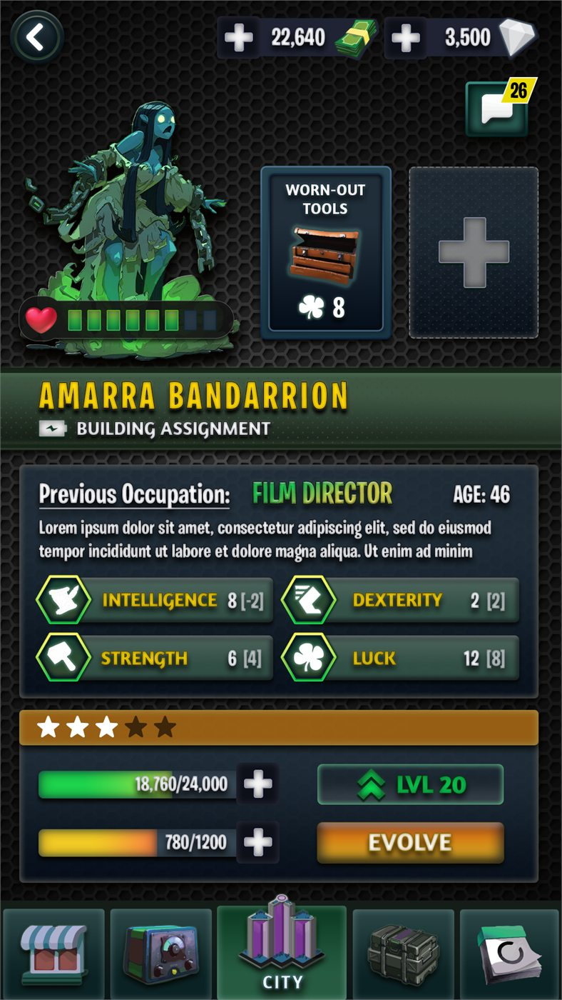
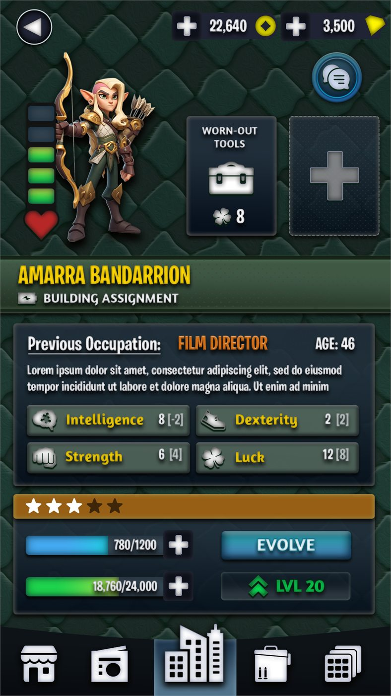
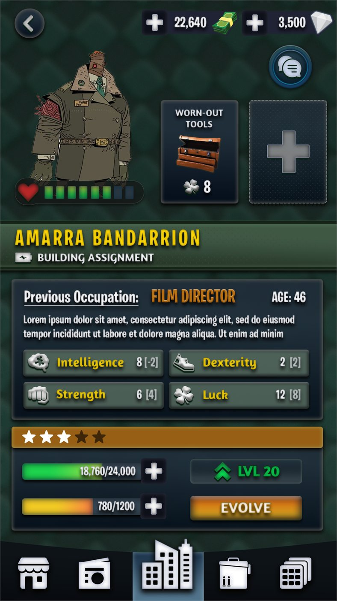
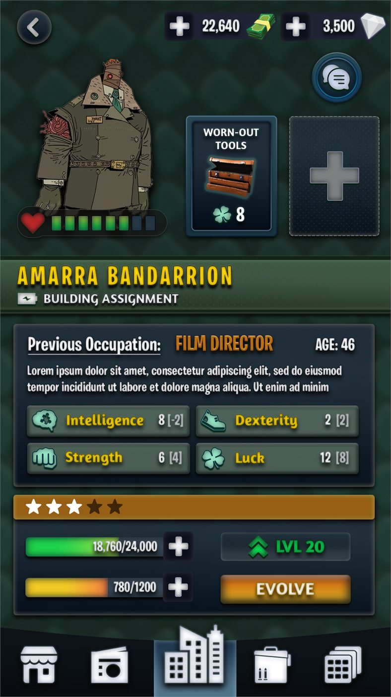
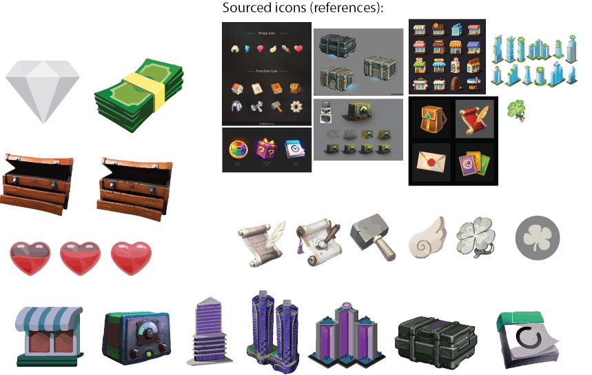
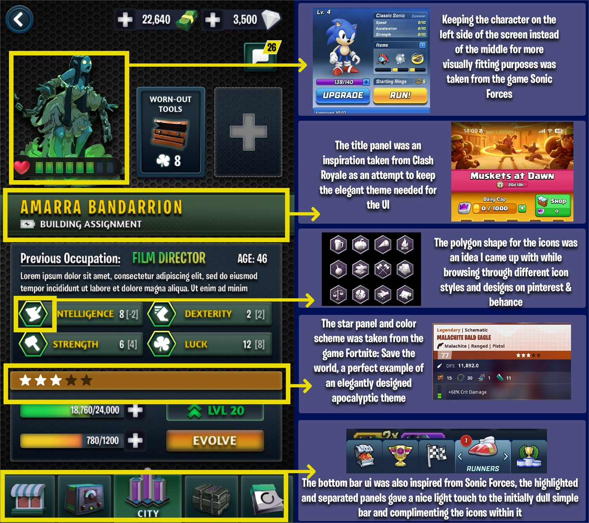
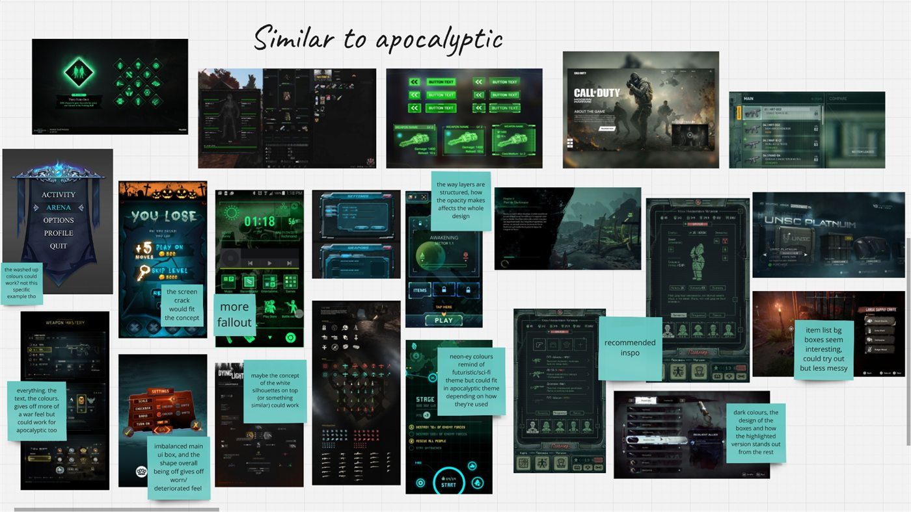
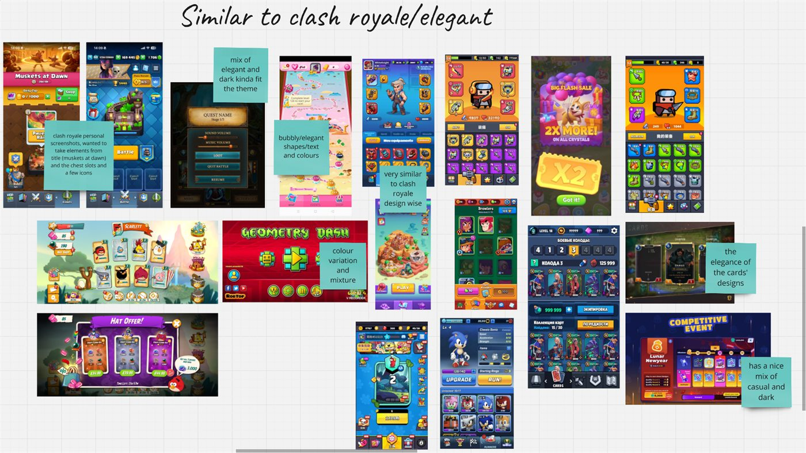
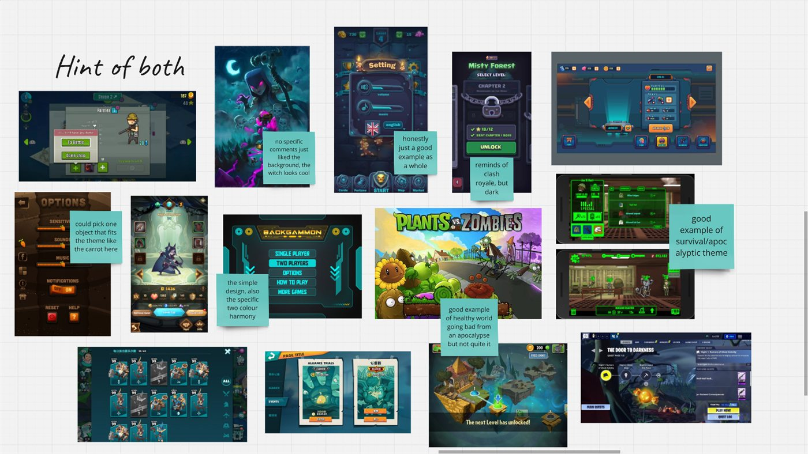
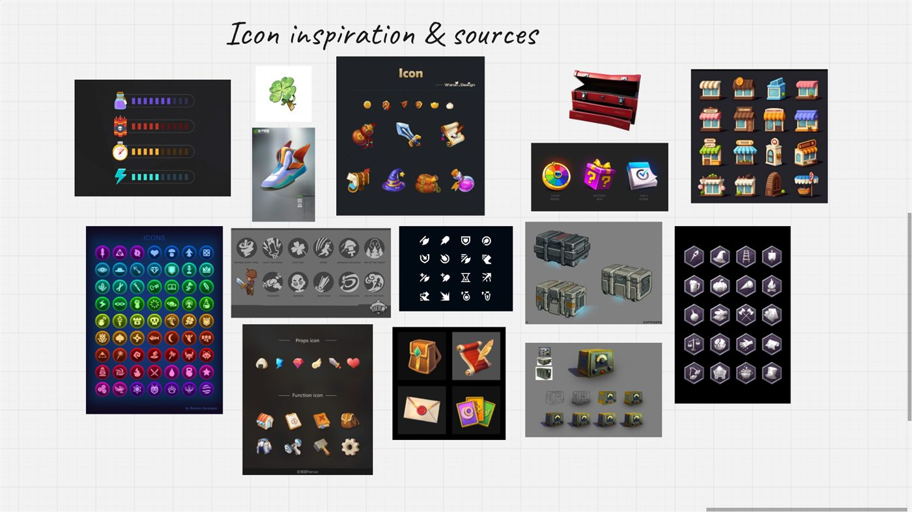

Apocalyptic Game UI
A UI concept that blends the bright, polished look of a casual competitive game with a gritty post-apocalyptic setting — a world that was once cheerful and full of bold colour, now carrying signs of wear, muted tones and a more restrained style.
Interface concept
Building Assignment
The screen has to carry two moods at once: the playful charm of where this world came from, and the hardship of what it became. Bold shapes and clean panels do the first; worn texture, muted colour and a restrained palette do the second. The grime stays in the frame and the background, and keeps clear of anywhere a player has to read a number.
-
The design
The building-assignment screen — a survivor's portrait, their previous life, the four attributes that decide where they are worth posting, and the cost of levelling them.
-

Final screen
-
-
Draft — older versions
Earlier passes at the same screen, kept for the record rather than shown at size.
-

Draft 1
-

Draft 2
-

Draft 3
-
-
Reference & moodboards
Contains third-party reference material
The research behind the screen: her own icon set built against sourced icon sheets, an annotated breakdown crediting what each decision came from, and the collected boards.
-

Icons — with sourced references
-

Annotated — third-party games
-

Moodboard 1 — third-party
-

Moodboard 2 — third-party
-

Moodboard 3 — third-party
-

Moodboard 4 — third-party
-